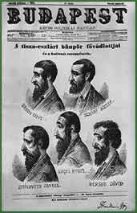

|  | |||
| In 1875, the first sign of political antisemitism occurred. This was the year Győző Istóczy (1842–1915) argued in the Parliament against the Jews settling in Hungary. This was followed by the blood libel in Tiszaeszlár in 1882–1883, which induced further antisemitic actions. In October 1883, the National Antisemitic Party was founded. | |||